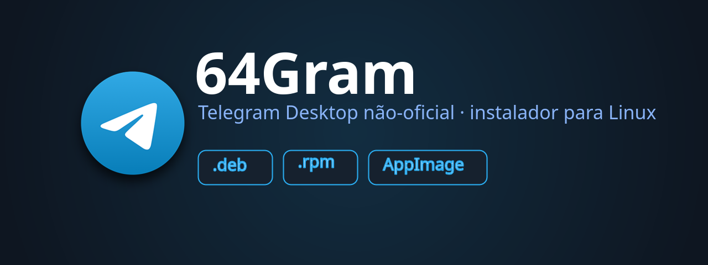

Instale com um comando, em qualquer distro.
curl -fsSL https://lucianoskx.github.io/64gram-installer/install.sh | bash
funciona em fish, zsh, bash, dash e sh · com flags: | bash -s -- --user
ou baixe o pacote pronto
já instalou?
curl -fsSL https://lucianoskx.github.io/64gram-installer/install.sh | bash -s -- --uninstall
apaga o app, o atalho, os ícones e as conversas (~/.local/share/64Gram) — vai pedir confirmação